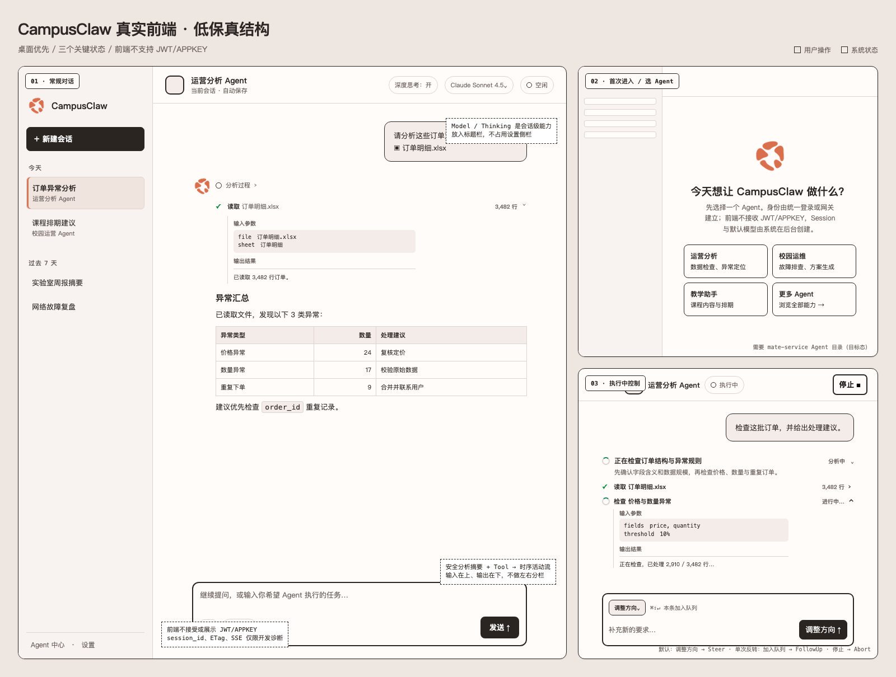
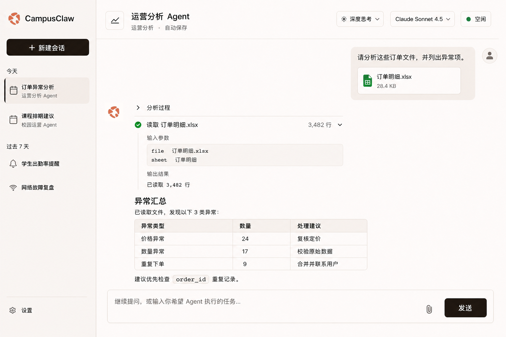
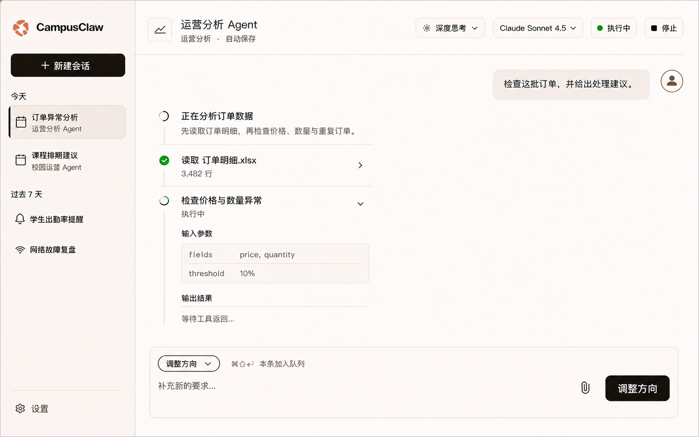

firstUse
待确认

作用
让用户先选择一个受管 Agent，再进入真实任务会话；用户身份由统一登录、mate-service 或网关建立，前端不接收 JWT/APPKEY。Runtime Session 创建、授权和默认模型初始化均在后台完成。
主要评审点
- 是否以 Agent 能力而不是协议配置开始。
- 首次进入是否需要单独高保真稿。
- Agent 卡片的名称、描述和权限提示是否足够。

pi-mono-java 320d7907 → d03c08db (PR 181) · event-only debug snapshot
本页沿用 Runtime HTTP 评审面的卡片结构和稳定评审键。每个界面状态使用固定 screenKey，依次评审作用、用户动作、系统约束和视觉材料；精确设计理由与源码证据仍以 Markdown 为准。
credentialBoundary当前实现没有凭据表单、秘密 VITE_* 配置、浏览器 credential store 或 Authorization / X-HW-APPKEY 注入路径；统一请求只发送非秘密 X-HW-ID。本轮只为隔离的内部开发构建增加临时 Header，不改变生产产品边界。
| 边界 | 设计结论 |
|---|---|
| 当前内部调试链路 | 当前仍无凭据控件；目标诊断抽屉只用于 Runtime 透传调试，不建立生产身份。 |
| 未来生产链路 | 统一登录、mate-service 或网关负责身份与授权；具体浏览器会话机制待公共 API 评审。 |
| 诊断例外 | 只在页面内存中接受用户填写的 Key/Value Header，仅附加到提交消息 POST；刷新或关闭页签清除。 |
401/403 | 交给统一登录/权限流程，不弹出凭据框，也不自动重放副作用请求。 |
debugHeaders入口位于内部构建顶部工具区。编辑器采用 Postman 风格的通用 Key/Value 表格，不预设凭据模式或 Header 名称。
| 请求 | 是否附加调试 Header |
|---|---|
初始 POST /sessions/{sessionId}/events | 是；发送时建立不可变快照。 |
| Session/历史/模型/Thinking | 否。 |
| Steer / FollowUp / Abort | 否；修改抽屉不改变正在执行的快照。 |
| Mate 发现 | 否；已评审后端特性提交 d03c08db 只在 Tool execute 下游请求中使用后端识别的凭据项。 |
界面直接引用同一张透明 PNG，不通过生成模型重绘。五个有机色块的形状、比例、间距与颜色保持不变；#D97757 只承担品牌识别，暖中性表面负责与其协调。
firstUse
待确认

让用户先选择一个受管 Agent，再进入真实任务会话；用户身份由统一登录、mate-service 或网关建立，前端不接收 JWT/APPKEY。Runtime Session 创建、授权和默认模型初始化均在后台完成。
idleConversation
待确认

围绕 Agent、Chat、消息、附件和工具活动完成日常任务。协议身份、ETag 和原始 SSE 不进入产品主流程；JWT/APPKEY/access-token 不是产品隐藏高级字段，只存在于内部诊断例外。
assistantRichText此处使用真实 HTML 语义展示目标排版，但实现必须由关闭 raw HTML 的 Markdown AST 通过固定 Vue 组件生成，禁止把模型输出直接写入 v-html 或 innerHTML。
已读取文件，发现以下 3 类异常：
| 异常类型 | 数量 | 处理建议 |
|---|---|---|
| 价格异常 | 24 | 复核定价 |
| 数量异常 | 17 | 校验原始数据 |
| 重复下单 | 9 | 合并并联系用户 |
建议优先检查 order_id 重复记录。
SELECT order_id, COUNT(*)
FROM t_order
GROUP BY order_id
HAVING COUNT(*) > 1;agentActivity参考 Codex 的活动披露：思考只展示面向用户的安全摘要，工具用紧凑动作行；当前执行项默认展开，完成项默认折叠。展开详情始终按“输入参数 → 输出结果”纵向排列，不做左右分栏。
先确认订单结构，再检查价格、数量与重复订单。
已读取 3,482 行。
runningConversation
跟进交互已确认 · 界面待确认

让用户看懂 Agent 正在做什么，并通过“调整方向”“加入队列”“停止”控制唯一 active execution。
保留工具工作台的克制层级，将冷灰表面调整为暖白与暖灰；O1 珊瑚色只用于品牌标识，不承担状态语义。
#FFFCFA#F8F3F0#EFE4DE#2B2522#D97757#00A240#A9472BfirstUse、idleConversation、runningConversation 作为首版稳定评审和测试边界。
O1 使用原始透明 PNG，不生成式重绘，也不缩进深色品牌方块；暖白、暖灰与深暖黑构成工作台，珊瑚色仅用于品牌标识，绿色继续表达运行与完成。
desktop 默认“调整方向”，设置可切换“加入队列”；Cmd/Ctrl+Shift+Enter 对单条消息临时反转。“调整方向”不会硬中断当前模型或工具。
生产身份与授权仍由统一登录、mate-service 或网关承担；产品 Chat 不出现凭据表单、秘密构建配置或浏览器持久化。
debugHeaders 诊断能力采用通用 Key/Value 表格、逐行启停、自动空白行和折叠的自动 Header；值只在页面内存中存活，仅附加到初始 POST /events。
Assistant 正文支持受限 Markdown；User、Thinking 和 Tool 原始结果保持纯文本/专用 viewer。raw HTML、远程 Markdown 图片、相对路由和危险协议永不激活。
Thinking 只展示公共 bridge 生成的安全标题和摘要；工具以紧凑动作行出现，当前项展开、完成项折叠，详情按“输入参数 → 输出结果”纵向排列。原始推理、内部 ID、绝对路径和凭据都不进入产品浏览器。